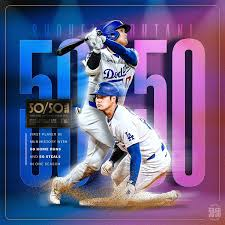

Shohei Ohtani (born July 5, 1994) is a Japanese professional baseball superstar known as a premier two-way player, excelling as both a pitcher and designated hitter for the LA Dodgers. He is the first MLB player with 50+ home runs and 50+ steals in a season (2024), a multi-time MVP winner, and a two-time World Series champion (2024, 2025)
